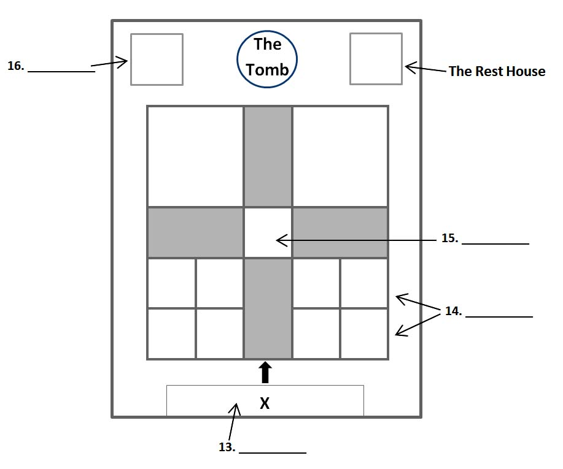

The Taj Mahal is the most popular tourist attraction in India. It is also one of the most spectacular buildings of the world, and is considered as a symbol of love. But how many people realise that it was actually built as a tomb or burial place for the Emperor’s wife?
The Taj Mahal was built by the Mughal Emperor Shahjahan to commemorate his beloved wife Mumtaz Mahal when she died, and, although this was not his original intention, for he had planned to build a black marble tomb for himself, they both lie side by side in the tomb (Q11) today. Emperor Shahjahan’s two greatest passions were architecture and jewellery and both are represented here in all their splendor.
The most skilled architects and craftsmen came from across India and countries as far away as Persia and Turkey. Much of the structure was built in white marble that was carried by a thousand elephants all the way from the Indian region of Rajasthan (Q12) some 300km away. Crystal and jade came from China, sapphires from Sri Lanka and turquoise from Tibet.

But there’s a lot more to the Taj Mahal than just the tomb, so let’s have a look at the overall plan before we take a walk through the magnificent gardens. Your tour begins here at the point marked with an X on the plan. This is known as The Main Gateway (Q13). Walk through the gate and you come into an magnificent garden. There are two marble canals studded with fountains, which cross in the centre of the garden, dividing it into four equal squares. Each of these four quarters is then subdivided into flower beds. So there are 16 flower beds (Q14) altogether. The tomb stands majestically at the north end, not in the centre as you might have expected Instead, at the centre of the garden, halfway between the tomb and the gateway, there’s a raised pond (Q15) which provides a reflection of the Taj Mahal. It’s a magnificent sight. On either side of the tomb there are buildings made of red sandstone. The one to the west – to the left on our plan – is a mosque (Q16). It faces towards Mecca and is used for prayer. On the east side of the Teg is a building known as the Rest House. It’s like the twin of the mosque, but because it faces away from Mecca, it was never used for prayer.
Many people have asked what the Rest House was for. Was it a place for pilgrims to stay? Was it a meeting hall of some kind? Perhaps the most likely answer to this question is that its purpose is purely aesthetic, to act as a visual balance for the mosque and to preserve the symmetry of the design (Q17) of the whole complex.
Let’s have a look at some of the engineering features of the garden. For one thing, they require a constant supply of running water. When it was built, water was drawn from the river (Q18) manually, using an elaborate rope and bucket system, pulled by a team of bullocks. The water was then brought through a broad water channel and held in a number of supply tanks (Q19). These tanks were at varying heights off the ground and were ingeniously designed to store the very large amounts of water required. Using an elaborate system of underground pipes, the water was then distributed from the supply tanks to each of the fountains (Q20). To ensure that the water pressure was the same throughout the garden, there was a copper pot under each fountain connected to the water supply. It was undoubtedly a brilliant system.